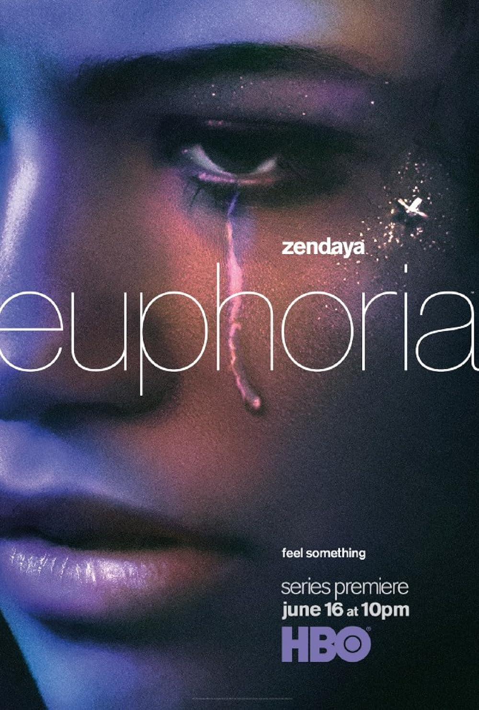
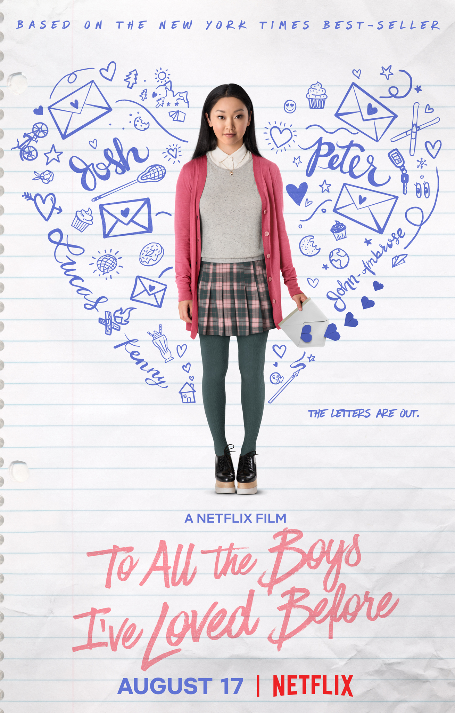
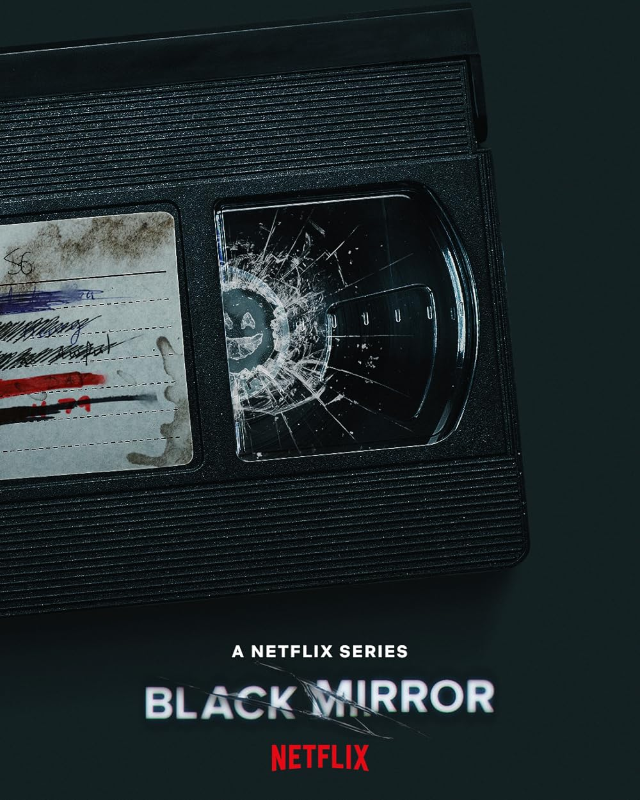
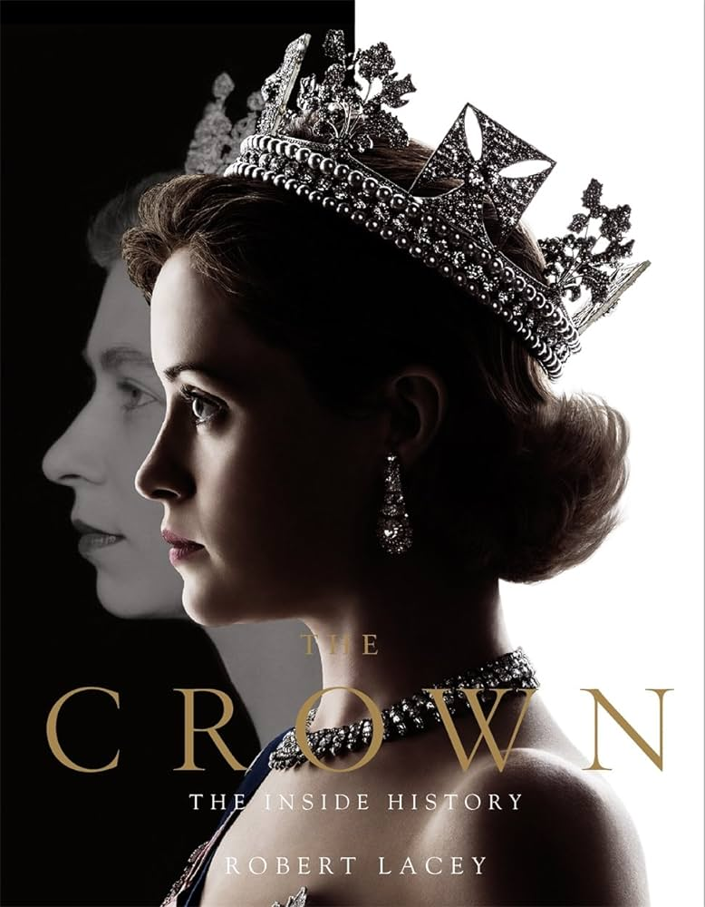

Euphoria (2019-)
A look at life for a group of high school students as they grapple with issues of drugs, sex, and violence.


To All the Boys I've Loved Before (2018)
A teenage girl's secret love letters are exposed and wreak havoc on her love life.

Black Mirror (2011-)
Featuring stand-alone dramas -- sharp, suspenseful, satirical tales that explore techno-paranoia -- "Black Mirror" is a contemporary reworking of "The Twilight Zone" with stories that tap into the collective unease about the modern world.
The Crown (2016-2023)
Follows the political rivalries and romances of Queen Elizabeth II's reign and the events that shaped Britain for the second half of the 20th century.
Gossip Girl (2007-2012)

Privileged teens living on the Upper East Side of New York can hide no secret from the ruthless blogger who is always watching.